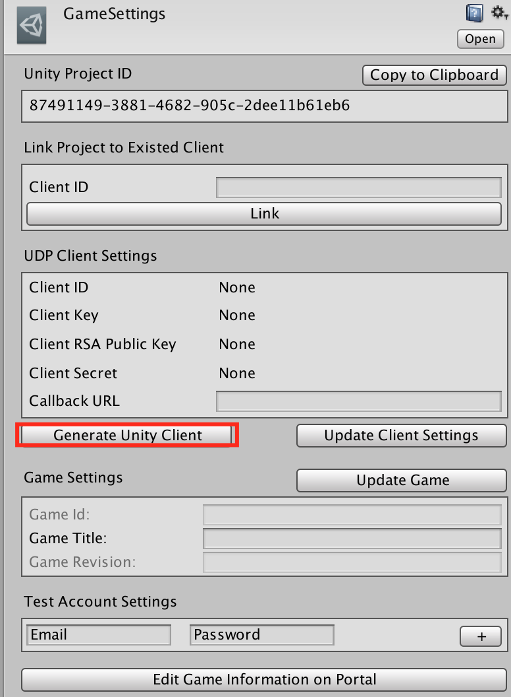

Configuring Unity Distribution Platform#
To configure Unity Distribution Platform (UDP):
- Set up UDP
- Generate a Unity client and test accounts
Setting up UDP#
Open Unity and log in with a Unity account. If you don’t have a Unity account yet, register one in https://id.unity.com.
Create or open a Project in the Unity Editor.
Download the UDP SDK.
Double-click the UDP package. The Import Unity Package window appears.
Select Import. Unity imports the UDP SDK.
To complete the UDP IAP integration, refer to Implementing UDP IAP.
1 | Tip: Unity IAP supports UDP as of version 1.21. You can enable UDP by setting up Unity IAP. To complete the Unity IAP technical integration, refer to Technical integration for Unity IAP. |
Tip: Unity IAP supports UDP as of version 1.21. You can enable UDP by setting up Unity IAP. To complete the Unity IAP integration, refer to Implementing Unity IAP for UDP.
Generating a Unity client and test accounts#
The UDP SDK contains a GameSettings file. You can use the file to generate a Unity client and test accounts.
Create a GameSettings file by selecting Window > Unity UDP > Game Settings.
View the Game Settings.asset file in the Inspector window and generate a Unity client by clicking Generate Unity Client.

| Property | Function |
|---|---|
| Client ID | The client identifier |
| Client Key | Which is used when initializing the UDP SDK |
| Client RSA Public Key | Which is used to verify the callback notification |
| Client Secret | A Unity key to signing your request that your game send to the UDP server |
| Callback URL | Specifies the server that receives the callback notification |